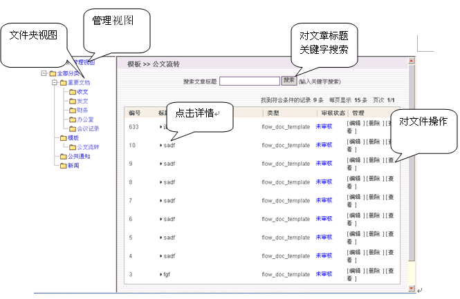
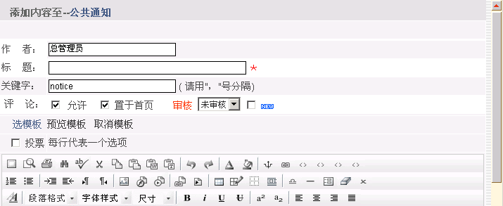
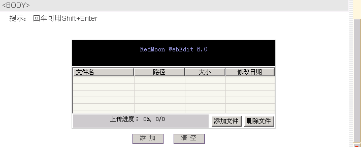
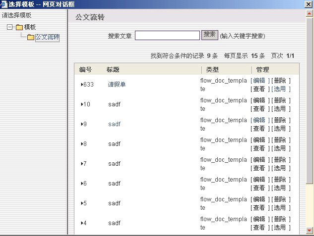

文件柜 |
| “行政管理”下的“文件柜”是用于存放文件。用户先建立文件夹，然后在文件夹里增加文件。个人文件柜具有对文本和Word文档检索、文件添加、分类管理等功能。如下图： |
|  |
| 添加文章： |
| 点击左侧菜单中所选目录，然后点击“添加”按钮。进入如图： |
|  |
|  |
| 在输入框中编辑内容,点击WebEdit控件下面的"添加"按钮，即可添加文章。 |
| 添加附件：点击“添加文件”按钮。 |
| 评论：文章是否允许评论。 |
| 审核：由具有审核权的人对该文章进行审核是否有效,如果审核通过会显示在文章列表中。审核分：未审核、未通过、已通过三种。 对目录不具修改权限的用户将只能看到已通过审核的文章。 |
| 点击选择模板出现对话框： |
|  |
| 点击“选用”即可。 |